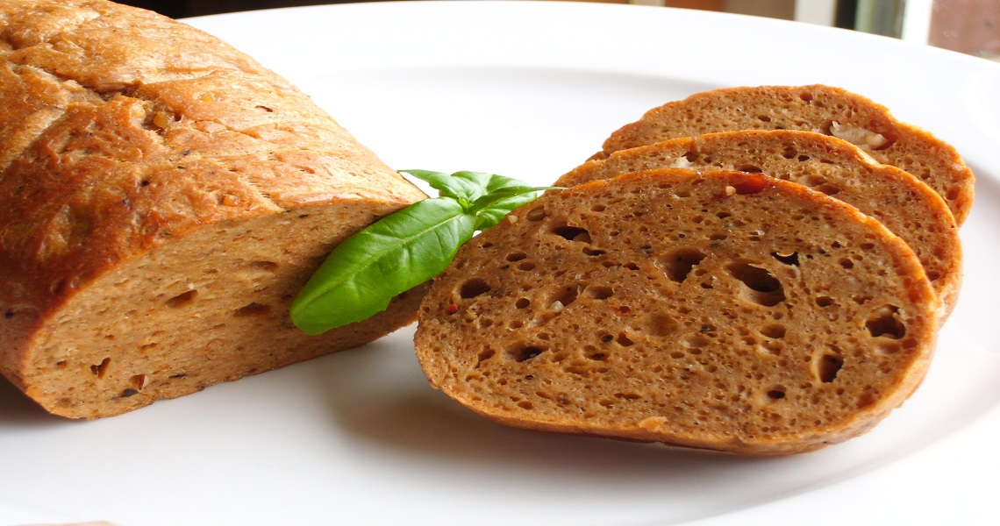

Seitán
13/01/2019, Santiago 
El seitán es el gluten que se obtiene a través de procesar la harina de trigo o de espelta. Su textura, forma y color recuerdan mucho a la carne, y puede ser un producto muy versátil que viene muy bien para hacer la transición hacia una dieta más natural, basada en alimentos vegetales.
Personalmente el seitan me encanta y siempre prefiero hacerlo en casa en vez de comprarlo en el herbolario. La textura queda más esponjosa y lo bueno de hacer seitan tu mismo es que le puedes añadir las especias que quieras, dándole el sabor que más te guste.
Este paquete de gluten lleva rondando en el armario de casa durante meses… Yo siempre he hecho seitán con harina de trigo, extrayendo el gluten de la harina yo misma en vez de comprar el gluten ya extraído. Para hacer seitán con harina de trigo primero hay que mezclar la harina con agua y después amasar durante un buen tiempo.
El proceso de hacer seitán requiere un rato amasando, así que unos buenos brazos y unas muñecas fuertes son esenciales para este tipo de trabajo. Por eso la idea de evitar todo el proceso de amasar y usar gluten extraído ha sido siempre bastante atrayente, y tengo que decir que, aunque me he resistido durante meses a hacerlo, el resultado ha sido sorprendente. La textura ha quedado esponjosa y el sabor increíble, además es super fácil de hacer.
¡Disfrútenlo!